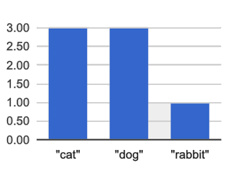
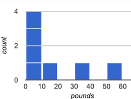

Histograms
Students are introduced to Histograms by comparing them to bar charts, learning to construct them by hand and in the programming environment.
|
Lesson Goals |
Students will be able to…
|
|
Student-facing Lesson Goals |
|
|
Materials |
|
|
Preparation |
|
bar chart-
a display of categorical data that uses bars positioned over category values; each bar’s height reflects the count or percentage of data values in that category
bin-
a range that values from a dataset can belong to; there is one bar in a histogram per bin
categorical data-
data whose values are qualities that are not subject to the laws of arithmetic
frequency-
how often a particular value appears in a dataset
histogram-
a display of quantitative data that uses vertical bars positioned over bins (sub-intervals); each bar’s height reflects the count or percentage of data values in that bin.
outlier-
observations whose values are very different from the other observations in the same dataset, perhaps due to experimental error. Outliers can also be indicative of data belonging to a different population from the rest of the established samples.
quantitative data-
number values for which arithmetic makes sense
sample-
a set of individuals or objects collected or selected from a statistical population by a defined procedure
shape-
The aspect of a dataset - visible in a histogram or box plot - that describes which values are more or less common.
| Introducing Histograms | 20 minutes |
Overview
Students look at a bar chart and a histogram, compare/contrast them, and make observations about what they have in common and how they are different. Then they learn a more formal explanation of histograms.
Launch
-
Turn to Summarizing Columns, which contains a table of data, two kinds of displays, and some questions.
-
Answer the questions at the bottom of the page.

{kind=link}
-
The x-axis lists the values of a categorical variable (
species). -
The y-axis shows the frequency of categorical values in the dataset.
-
This chart happens to show the categorical values in alphabetical order from left to right, but it would be fine to re-order them any way we wish. The bar for “dogs” could have been drawn before the one for “cats”, without changing the meaning of the display.

{kind=link}
-
Histograms show the distribution of quantitative data.
-
Since quantitative data must follow a natural order, these bars cannot be re-ordered.
-
Histograms allow us to see the shape of a dataset.
Investigate
To build a histogram, we start by sorting all of the numbers in our column from smallest to largest, marking our x-axis from the smallest value (or a bit below) to the largest value (or a bit above) and dividing into equally-sized or bins (also known as intervals). For example, if our values ranged from 3 to 53 we might mark our x-axis from 0 to 60 and divide it into bins of width 10. If they range from 22 to 41 we might mark our x-axis from 20 to 45 and divide it into bins of width 5. Once we have our bins, we put each value in our dataset into the bin where it belongs, and then count how many values fall in each bin. This count determines the height of the bars on our y-axis.
Optional: Kinesthetic Activity Divide the class into groups, and give each group a ball of play-dough. Have the groups roll the dough into a thick cylinder, then divide that cylinder in half. Then, have them take one of the halves and cut that in half again, then cut one of the resulting pieces in half once more. This will form four chunks of playdough, with a ratio of 1:1:2:4 The playdough represents a sample, with values falling into four intervals. The largest cylinder represents double the number of "datapoints" (amounts of dough) as the next largest, which in turn has double the datapoints of the two small ones. Histograms pile the datapoints into equally-sized intervals, just as the cylinders of dough are all of the same width. More dough means longer cylinders, since the "interval width" (cylinder thickness) stays fixed. Have students line up the cylinders from smallest-to-largest, laying them on a sheet of graph paper. Have them come up with labels for the x- and y-axis! |
Turn to Making Histograms, and try drawing a histogram from a dataset.
Extreme values - which sit far above or below the others - are called outliers
In the histogram we just made, we see that the data is clustered at the right-hand side of the histogram: most people in this sample have close to a full set of teeth, with some people missing a few more than others. But apparently there are five people with almost no teeth at all! These are very unusual, and they show up as a small bar far to the left of the cluster. Extreme data points like this are called outliers.
Common Misconceptions
Note that intervals on this display include the left endpoint but not the right. If we included the right endpoint and someone had 0 teeth, we’d have to add on a bar from -5 to 0, which would be awfully strange!
Synthesize
Review: How are histograms and bar charts different?
| Choosing the Right Bin Size | 30 minutes |
Overview
Students make histograms from the animals-dataset, and explore different bin sizes.
Launch
The size of the bins matters a lot! Bins that are too small will hide the shape of the data by breaking it into too many short bars. Bins that are too large will hide the shape by squeezing the data into just a few tall bars. In this workbook exercise, the bins were provided for you. But how do you choose a good bin-size?
Investigate
Suppose we want to know how long it takes for animals from the shelter to be adopted.
-
Open your saved Animals Starter File, or make a new copy.
-
Find the contract for the
histogramfunction. -
Make a histogram for the
"weeks"column in theanimals-table, using a bin size of 10. -
How many took between 0 and 10 weeks? Between 10 and 20?
-
29 animals took between 0 and 10 weeks to be adopted; just 1 animal took between 10 and 20 weeks.
-
-
Try some other bin sizes (be sure to experiment with bigger and smaller bins!)
-
What shapes emerge? What bin size gives you the best picture of the distribution?
-
Are there any outliers? Are they high or low?
-
Count how many animals took between 0 and 5 weeks to be adopted. How many took between 5 and 10 weeks?
-
18 animals took between 0 and 5 weeks to be adopted; 11 animals took between 5 and 10 weeks.
-
-
What else do you Notice? What do you Wonder?
Some observations you can share with the class, to get them started:
-
We see most of the histogram’s area under the two bars between 0 and 10 weeks, so we can say it was most common for an animal to be adopted in 10 weeks or less.
-
We see a small amount of the histogram’s area trailing out to unusually high values, so we can say that a couple of animals took an unusually long time to be adopted: one took even more than 30 weeks.
-
More than half of the animals (17 out of 31) took just 5 weeks or less to be adopted. But the few unusually long adoption times pulled the average up to 5.8 weeks. We’ll talk more about Shape of a histogram in the next lesson, and about its effect on average (the mean) in the lesson after that.
If someone asked what was a typical adoption time, we could say: “Almost all of the animals were adopted in 10 weeks or less, but a couple of animals took an unusually long time to be adopted — even more than 20 or 30 weeks!” It would have been hard to give this summary by reading through the table, but the histogram makes it easy to see!
-
See if you can match descriptions to histograms, by completing Reading Histograms
Synthesize
-
What would the histogram look like if most of the animals took more than 20 weeks to be adopted, but a couple of them were adopted in fewer than 5 weeks?
-
What would the histogram look like if every animal was adopted in roughly the same length of time?
-
What bin sizes worked best for analyzing
adoption?
Have students talk about the bin sizes they tried. Encourage open discussion as much as possible here, so that students can make their own meaning about bin sizes before moving on to the next point.
Rule of thumb: a histogram should have between 5–10 bins.
Histograms are a powerful way to display a dataset and assess its shape. Choosing the right bin size for a column has a lot to do with how data is distributed between the smallest and largest values in that column! With the right bin size, we can see the shape of a quantitative column. But how do we talk about or describe that shape, and what does the shape actually tell us? The next lesson addresses all of these…
These materials were developed partly through support of the National Science Foundation,
(awards 1042210, 1535276, 1648684, and 1738598).  Bootstrap by the Bootstrap Community is licensed under a Creative Commons 4.0 Unported License. This license does not grant permission to run training or professional development. Offering training or professional development with materials substantially derived from Bootstrap must be approved in writing by a Bootstrap Director. Permissions beyond the scope of this license, such as to run training, may be available by contacting contact@BootstrapWorld.org.
Bootstrap by the Bootstrap Community is licensed under a Creative Commons 4.0 Unported License. This license does not grant permission to run training or professional development. Offering training or professional development with materials substantially derived from Bootstrap must be approved in writing by a Bootstrap Director. Permissions beyond the scope of this license, such as to run training, may be available by contacting contact@BootstrapWorld.org.